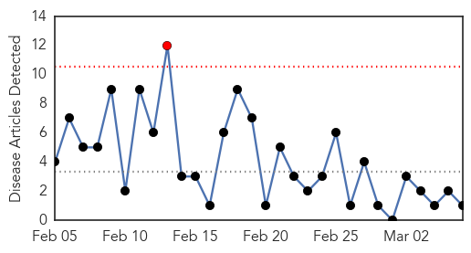
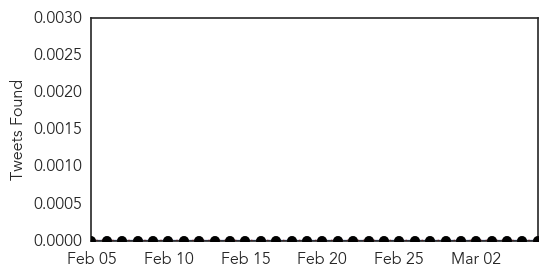
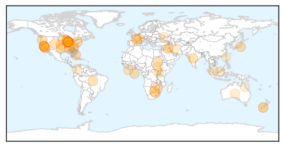

Meningitis
30-Day Web Trend
1 alerts, 0 warnings

30-Day Twitter Trend
2 alerts, 0 warnings

Article Locations

Article Confidences

Top Articles:
Top Tweets:
- 0.803
- RT: NEWS SCAN: More Saudi MERS cases; College meningitis B outbreak; More contaminated scopes http://t.co/8cwkSjIF8q
Unknown
30-Day Web Trend
1 alerts, 0 warnings

30-Day Twitter Trend
0 alerts, 0 warnings

Article Locations
Article Confidences

Top Articles:
- 0.942
- Superbug outbreaks prompt calls for mandatory reporting
- 0.925
- Radical vaccine design effective against herpes viruses
- 0.917
- Chicago Tribune
- 0.917
- Chicago Tribune
- 0.917
- Chicago Tribune
- 0.917
- Chicago Tribune
- 0.917
- Chicago Tribune
- 0.917
- Chicago Tribune
- 0.917
- Chicago Tribune
- 0.917
- Chicago Tribune
- 0.917
- Chicago Tribune
- 0.917
- Chicago Tribune
- 0.917
- Chicago Tribune
- 0.917
- Chicago Tribune
- 0.917
- Chicago Tribune
- 0.917
- Chicago Tribune
- 0.917
- Chicago Tribune
- 0.917
- Chicago Tribune
- 0.917
- Chicago Tribune
- 0.917
- Chicago Tribune
- 0.917
- Chicago Tribune
- 0.917
- Chicago Tribune
- 0.917
- Chicago Tribune
- 0.886
- PEDv Outbreak Confirmed in Georgia
- 0.859
- Another Los Angeles Hospital Hit by 'Superbug' Infections
- 0.801
- MEC reveals plan of action
- 0.782
- Use of Endoscopes leads to CRE infection in second LA hospital
- 0.738
- Observer
- 0.733
- 15,000 Pope County turkeys die from avian flu; humans not at risk
- 0.720
- Otago receives grant to track true toll of neglected deadly disease
- 0.712
- Experts hail inclusive health approach
- 0.704
- Epidemiology of the Unimmunized Child: Findings from the Grey Literature
- 0.700
- Possums Likely Culprit as "Niche Disease" Appears in SoCal Communities
- 0.697
- Medical malpractice: A bitter pill to swallow?
- 0.695
- We All Succeed When We All Succeed
- 0.661
- TLC Africa
- 0.640
- Confirmed cases of chickenpox at Carmel Clay Schools
- 0.626
- South Sudan peace talks adjourn without agreement
- 0.626
- Environmentalists lose bitter battle over controversial dam
- 0.626
- Court tells Facebook France has jurisdiction in vagina row
- 0.626
- EU, Germany downplay sanctions option in Ukraine conflict
- 0.626
- Forensics show Argentine prosecutor was murdered, says ex-wife
- 0.626
- Police rule out mystery biker in French Alps murders
- 0.616
- Health Warning – toxic algae found in Ashley River/
- 0.610
- 'Superbug' outmatched by protocol, precaution at Lehigh Valley hospitals, officials say
- 0.609
- Dr. Robert Franklin Extends LANAP® Laser Gum Surgery Treatment to Louisville, KY Residents with Gum Disease
- 0.588
- Colombia turns attention to extreme poverty in Pacific west
- 0.586
- Monkeys at risk for bioterror bacteria put outdoors
- 0.572
- Ukraine: Fighting decreases but medical situation remains dire
- 0.559
- Otago Daily Times Online News : Otago, South Island, New Zealand & International News
Showing top 50 articles...
Top Tweets:
- 0.847
- RT: FLU SCAN: New estimate of flu deaths; GBS and flu hospitalization http://t.co/e2Yq6GIVjh
- 0.659
- A dormir, que si no también me roba el sueño. Hay un síndrome de gente que no puede parar de robar. Diagnostico a
- 0.559
- Although the flu and common cold have similar symptoms, the flu tends to be more severe. http://t.co/KwoAd1FP1W